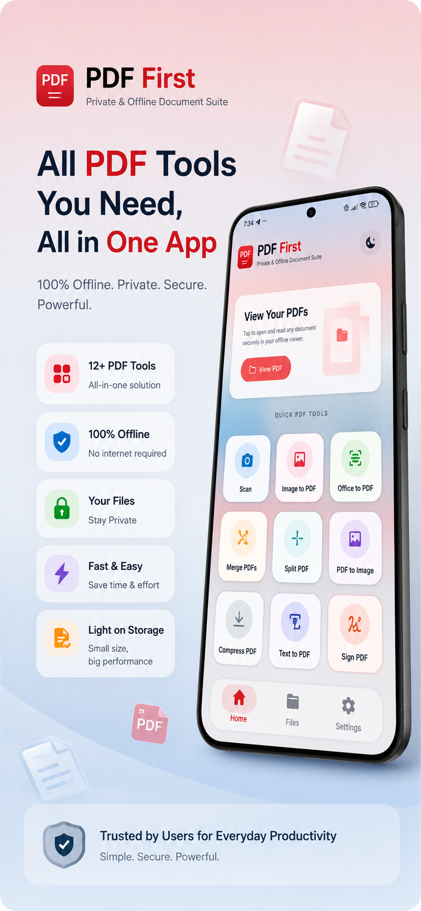
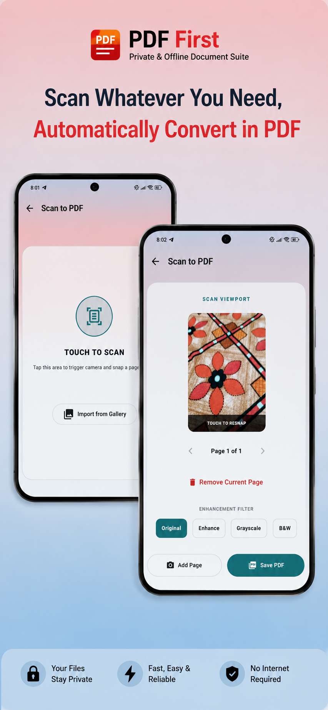
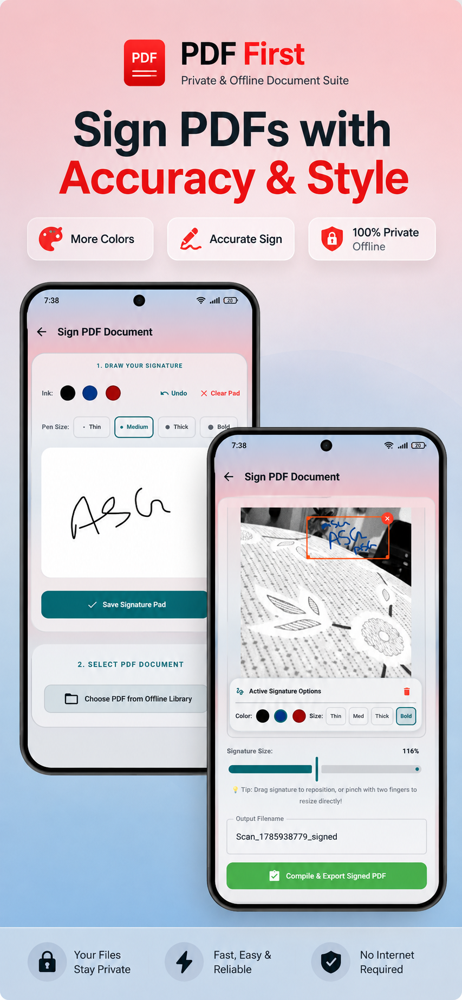

⌁
Scan to PDF
Capture documents, crop pages and create clean PDF files.
Scan, create, convert, merge, split, compress, sign, view and edit PDFs from one clean app. Core document operations are designed to run locally on your device where applicable.
A focused set of tools for scanning, converting and managing PDF documents without a complicated workflow.
Capture documents, crop pages and create clean PDF files.
Turn selected images into organized PDF documents.
Combine PDFs or separate pages into new documents.
Optimize document size for easier storage and sharing.
Create and place signatures on PDF documents.
Create documents from text and export them as PDFs.
Export PDF pages as image files when needed.
Open PDFs and use available annotation and editing tools.
A clean interface with direct access to the tools you use most.



Read how PDF First handles documents, permissions, advertising, third-party services and data-related choices.